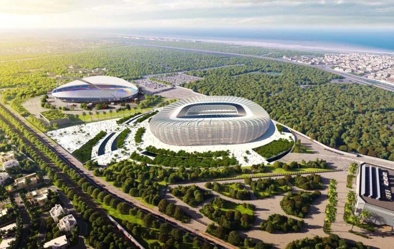
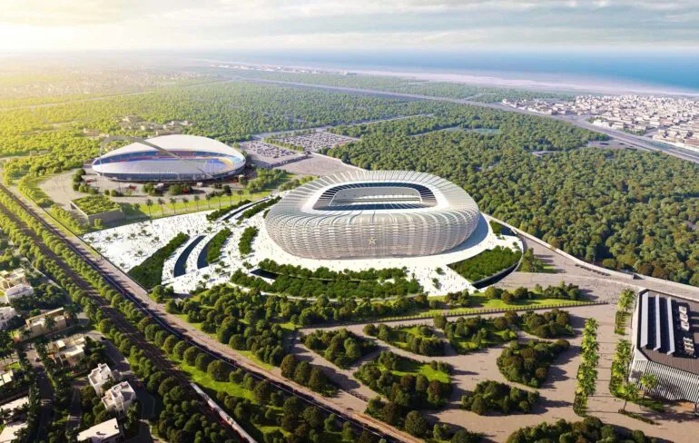
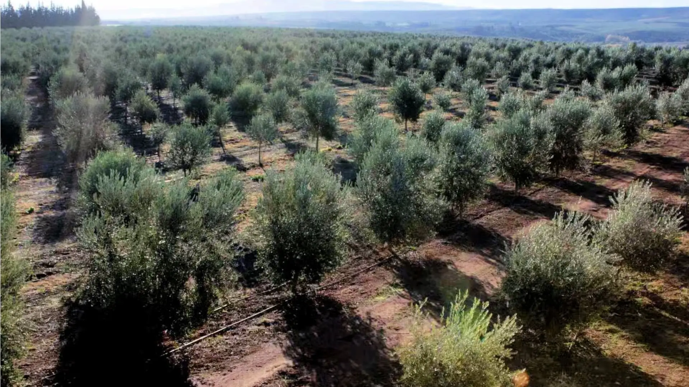
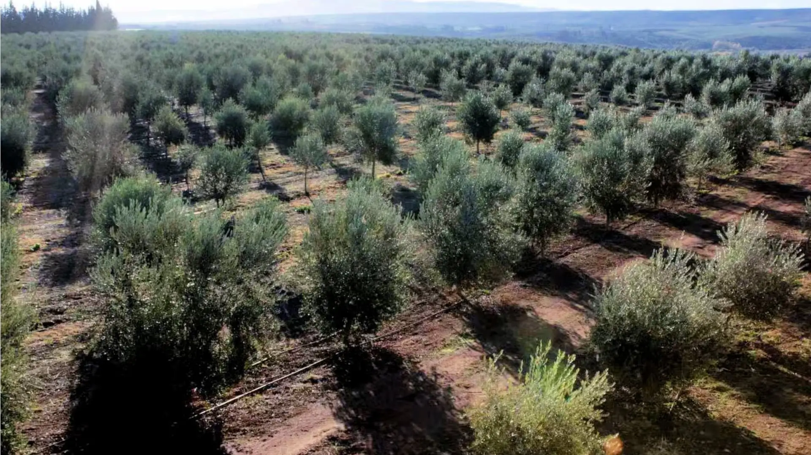
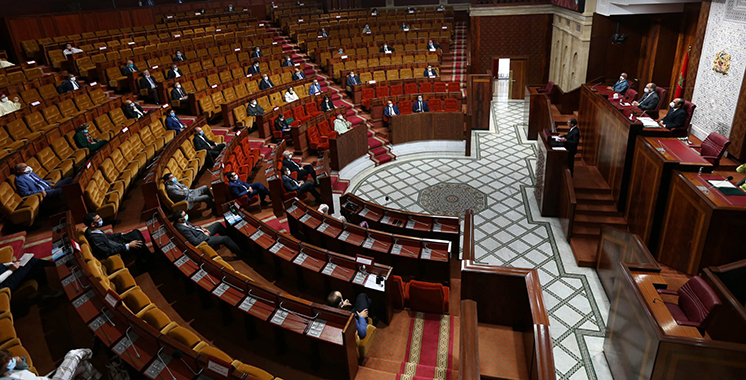
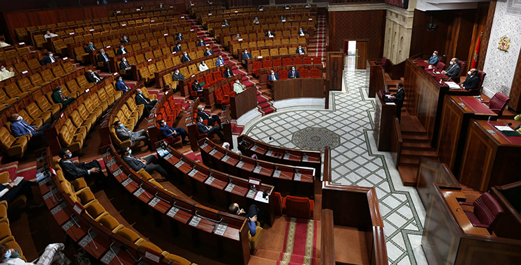

Économie
L’économie marocaine est caractérisée par une structure plurielle où coexistent des secteurs traditionnels et des pôles modernes. L’agriculture emploie encore une part importante de la population, avec des productions variées (agrumes, tomates, céréales, huile d'olive) qui alimentent les marchés locaux et les exportations. À côté, des secteurs industriels — agroalimentaire, textile, automobile, aéronautique — se sont développés, soutenus par des zones industrielles et des politiques d’incitation à l’investissement. Le phosphate, ressource naturelle majeure, demeure un pilier des recettes d’exportation et alimente une chaîne de valeur autour de la transformation chimique et des engrais. Parallèlement, le tourisme, bien que sensible aux fluctuations globales, reste une source importante de devises et d’emplois, avec des destinations variées : littoraux, médinas historiques et tourisme culturel. Sur le plan macroéconomique, le pays travaille depuis plusieurs années à diversifier ses partenaires commerciaux et à attirer des investissements directs étrangers, en particulier via des projets portuaires (Tanger Med), des zones franches et des améliorations du climat des affaires. Des défis structurants persistent : création d’emplois qualifiés pour la jeunesse, réduction des inégalités territoriales entre zones urbaines et rurales, et renforcement des filets sociaux. Les initiatives récentes portent sur les énergies renouvelables (projets solaires et éoliens d’envergure), la transition énergétique, et la digitalisation des services publics et privés pour améliorer productivité et compétitivité.
Culture et patrimoine
La richesse culturelle du Maroc tient à la confluence d’héritages amazigh, arabe, saharien et andalou. Cette pluralité se manifeste dans la langue, les musiques (gnawa, andalouse, chaâbi), la cuisine régionale, et les arts décoratifs. Les médinas — réseaux d’anciennes villes historiques comme Fès, Marrakech et Chefchaouen — conservent un patrimoine architectural précieux : riads, mosquées, souks et ateliers d’artisans. L’artisanat (zellige, tissage, travail du cuir, ferronnerie) représente non seulement une valeur culturelle, mais aussi un secteur économique qui soutient des communautés locales et attire le tourisme culturel. Les festivals annuels (musique, cinéma, arts du spectacle) jouent un rôle crucial pour la diffusion culturelle et l’économie créative : ils créent des occasions d’échange international, stimulent l’accueil touristique et mettent en lumière des artistes locaux. La scène littéraire et cinématographique marocaine connaît aussi un essor, avec des œuvres qui explorent l’histoire, la modernité et les dynamiques sociales contemporaines. Enfin, la préservation du patrimoine et l’éducation culturelle sont des enjeux prioritaires pour assurer que les traditions continuent d’évoluer sans se perdre, tout en s’adaptant aux attentes d’un public jeune et connecté.
Sport

 



Le football occupe une place centrale dans la vie sociale et culturelle du pays : il fédère les communautés, crée une forte identité régionale autour des clubs, et suscite l’enthousiasme lors des compétitions internationales. L’essor des académies de formation et des centres d’entraînement vise à professionnaliser le vivier de jeunes talents et à améliorer la compétitivité sur la scène africaine et mondiale. Ces dernières années, le Maroc a investi massivement dans des infrastructures sportives modernes. De nouveaux stades aux normes internationales ont vu le jour, tels que le Grand Stade de Tanger, le Stade Adrar à Agadir, le Stade de Marrakech, et la rénovation complète du Complexe Moulay Abdellah de Rabat. Ces installations, combinées à la préparation du pays pour accueillir la Coupe d’Afrique des Nations 2025, témoignent de la volonté du Maroc de devenir une véritable puissance sportive sur le continent. Les performances internationales récentes confirment cette ambition : l’équipe nationale a marqué l’histoire lors de la Coupe du Monde 2022 au Qatar, en devenant la première sélection africaine à atteindre les demi-finales, suscitant une immense fierté nationale et internationale. De nombreux athlètes marocains brillent aussi dans d’autres disciplines — athlétisme, taekwondo, cyclisme et surf — renforçant l’image d’un pays dynamique et passionné de sport. Parmi les clubs emblématiques, le Raja Club Athletic de Casablanca occupe une place à part. Fondé en 1949, il s’est imposé comme l’un des clubs les plus titrés d’Afrique. Le Raja a remporté trois Ligues des Champions de la CAF, plusieurs championnats nationaux, ainsi qu’une Coupe de la CAF en 2021. Son parcours historique lors de la Coupe du Monde des Clubs 2013, où il a atteint la finale face au Bayern Munich, a fait vibrer tout le pays — un exploit que même l’équipe nationale n’avait jamais accompli à ce niveau de compétition interclubs. Outre le football, d’autres disciplines gagnent en visibilité : l’athlétisme, avec des champions comme Soufiane El Bakkali, les arts martiaux, le cyclisme et les sports nautiques, notamment le surf le long des côtes atlantiques, soutenus par des programmes nationaux de développement. Le sport au Maroc est désormais perçu non seulement comme un divertissement, mais comme un levier de cohésion sociale, d’éducation et de santé publique. En investissant dans la jeunesse, les infrastructures et la formation, le royaume construit un modèle sportif durable, où la passion et l’excellence vont de pair.
Infrastructures et aménagement


Le Maroc a investi massivement dans ses infrastructures au cours des dernières décennies, visant à améliorer la connectivité intérieure et son intégration dans les chaînes logistiques mondiales. Le réseau autoroutier et les corridors routiers ont été développés pour relier les grandes agglomérations, tandis que des ports modernes (notamment Tanger Med) positionnent le pays comme un hub entre l’Europe, l’Afrique et les Amériques. Les liaisons ferroviaires, y compris le projet TGV (Al Boraq), réduisent les temps de trajet et facilitent les déplacements professionnels et touristiques entre les régions. Les politiques publiques encouragent également les projets d’infrastructure urbaine — transports publics, assainissement, logements sociaux — pour répondre aux besoins d’une population urbaine croissante. L’accent est mis sur la durabilité : gestion de l’eau, traitement des déchets, et intégration d’énergies renouvelables dans les réseaux électriques. Malgré ces progrès, des défis subsistent, comme la modernisation des infrastructures rurales, l’entretien des ouvrages existants et la coordination territoriale pour réduire les disparités de développement.
Histoire


L’histoire du Maroc est une saga riche et complexe, marquée par l’influence de nombreuses civilisations au fil des siècles. Depuis l’Antiquité, le territoire a été habité par les populations amazighes, qui ont laissé un héritage culturel et architectural durable. L’arrivée des Phéniciens, puis des Carthaginois, a introduit de nouvelles dynamiques commerciales et culturelles. Avec l’invasion romaine, certaines villes comme Volubilis ont prospéré et témoignent encore aujourd’hui de l’organisation urbaine et de l’architecture romaine. Le Moyen Âge a vu la montée des dynasties islamiques, dont les Idrissides, les Almoravides et les Mérinides, qui ont construit des citadelles, des médinas et des mosquées symbolisant leur pouvoir et leur foi. Le Maroc a également joué un rôle important dans le commerce transsaharien, reliant les villes du nord de l’Afrique aux riches cités africaines du sud. À l’époque moderne, le pays a résisté à la colonisation européenne tout en subissant des influences culturelles et politiques diverses, avant d’accéder à l’indépendance en 1956. Chaque période historique a contribué à façonner l’identité unique du Maroc, en mêlant traditions, innovations et interactions avec d’autres cultures.
Agriculture
 

L’agriculture au Maroc constitue un pilier essentiel de l’économie et de l’emploi. Elle repose sur une diversité de cultures adaptées aux climats variés, allant des plaines fertiles du Gharb aux vallées montagneuses de l’Atlas. Les principales productions comprennent les céréales, les agrumes, les olives, les légumes et le sucre. L’irrigation, notamment via les barrages et les systèmes de canalisation, joue un rôle clé pour assurer la productivité dans les zones arides. L’agriculture marocaine ne se limite pas aux cultures vivrières : l’élevage, la pêche et la production de fruits exportés, comme les agrumes et les primeurs, contribuent aux revenus des familles rurales et aux devises du pays. Ces dernières années, le Plan Maroc Vert a introduit des pratiques agricoles durables, encourageant l’agriculture raisonnée, la préservation de l’eau et l’innovation technologique. L’agriculture au Maroc est également confrontée à des défis tels que la variabilité climatique, la désertification, et la nécessité de moderniser les infrastructures rurales pour soutenir les petits exploitants. Malgré cela, ce secteur continue d’évoluer et de jouer un rôle stratégique dans la sécurité alimentaire, l’emploi et le développement rural.
Éducation


Le système éducatif marocain s’efforce de répondre aux besoins d’une population jeune et en croissance. Il combine des enseignements publics, privés et religieux, avec un accent croissant sur l’innovation et la digitalisation. L’éducation de base est obligatoire et vise à assurer un niveau minimum de compétences en lecture, écriture et mathématiques. Le gouvernement a mis en place des programmes pour améliorer la qualité de l’enseignement, réduire le taux d’abandon scolaire et promouvoir l’accès à l’éducation dans les zones rurales et défavorisées. Les universités et écoles supérieures proposent des formations variées dans les domaines scientifiques, techniques, économiques et artistiques. Le Maroc investit également dans la formation professionnelle pour préparer les jeunes aux besoins du marché du travail et encourager l’entrepreneuriat. Malgré ces efforts, des défis persistent : le manque de ressources dans certaines régions, l’adaptation des programmes aux exigences contemporaines et la réduction des inégalités entre les sexes. L’éducation au Maroc reste ainsi un pilier fondamental pour le développement économique, social et culturel du pays, et un levier pour l’émancipation des nouvelles générations.
Santé

Le secteur de la santé au Maroc connaît une transformation progressive, visant à améliorer l’accès aux soins et la qualité des services. Les hôpitaux publics et cliniques privées offrent une couverture médicale pour une population diversifiée répartie sur l’ensemble du territoire. Les campagnes de vaccination et de prévention sanitaire sont régulièrement menées pour lutter contre les maladies infectieuses et améliorer la santé maternelle et infantile. Le Maroc investit dans la modernisation des infrastructures médicales, le recrutement de professionnels qualifiés et l’introduction de technologies médicales avancées. La couverture médicale universelle, qui s’étend progressivement aux populations les plus vulnérables, vise à réduire les disparités entre zones urbaines et rurales. Les défis majeurs restent la pénurie de spécialistes dans certaines régions, la hausse des maladies chroniques et l’accessibilité financière des soins. Cependant, les réformes récentes et les initiatives publiques et privées contribuent à renforcer la résilience du système de santé marocain et à assurer une meilleure qualité de vie pour ses citoyens.
Politique
 

La vie politique au Maroc est structurée autour d’un système monarchique constitutionnel, où le roi joue un rôle central dans la direction de l’État et la stabilité nationale. Les institutions gouvernementales, parlementaires et locales assurent la gestion des affaires publiques et l’application des politiques nationales. Le Maroc a connu au fil des décennies des réformes visant à renforcer la démocratie, la participation citoyenne et les droits humains. Les élections législatives, communales et régionales permettent une représentation diversifiée et favorisent l’expression des citoyens. Le pays participe également activement aux affaires internationales, au sein de l’Union africaine, des Nations unies et des instances régionales. Les défis politiques incluent la consolidation de l’état de droit, la lutte contre la corruption, l’amélioration de la gouvernance et la promotion d’une société inclusive. La politique marocaine demeure un équilibre entre modernité et traditions, visant à garantir le développement durable et la stabilité sociale et économique.
Société

La société marocaine est le reflet d’une diversité culturelle, ethnique et religieuse. Les traditions, coutumes et valeurs sociales façonnent le quotidien, tout en s’adaptant aux transformations économiques, technologiques et urbaines. La famille occupe une place centrale, avec des liens intergénérationnels forts et un rôle crucial dans l’éducation et le soutien social. Les jeunes générations participent activement à la vie sociale et culturelle, tout en revendiquant davantage de liberté et d’opportunités professionnelles. Les migrations internes et internationales ont influencé les modes de vie et les perceptions sociales, tandis que les réseaux sociaux et les technologies numériques modifient la communication et les interactions. Les politiques publiques visent à renforcer l’inclusion sociale, l’égalité des sexes et la participation citoyenne. Malgré des disparités régionales et économiques, le Maroc témoigne d’une capacité d’adaptation et de résilience, où traditions et modernité coexistent pour construire une société dynamique, solidaire et tournée vers l’avenir.